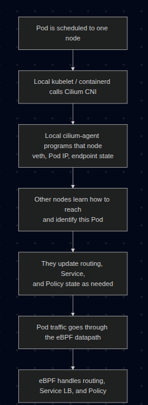

Series: Container Networking Deep Dive
- Demystifying Docker Networking: A Deep Dive into Bridge & veth
- Demystifying Docker Networking Egress: The Masquerade Magic
- Demystifying CNI: When Kubernetes "Borrows" Plugins to Build Its Network
- How Cilium CNI works in K8S (You are here)
In Part 3, we stripped the CNI flow down to bare metal: a binary + env vars + JSON on stdin. That contract does not change with Cilium. Kubelet still calls a CNI plugin. What changes is what the plugin and its agent do after that call.
If you want a easier Kubernetes networking refresher before going deeper, I also wrote another intro-level post back in 01-2025. Even beginner level can read it pretty well (I'm bad at that time xD)
One correction before we start: "Cilium means iptables is gone" is too simplistic. The more accurate version is:
- Cilium can move Service load-balancing, policy enforcement, and a large part of the datapath into eBPF
- Cilium can also replace kube-proxy
- Depending on the feature set and host config, you may still see some iptables rules on the node
So the real win is not "iptables disappears completely". The real win is that the hot Kubernetes networking path no longer depends on kube-proxy building giant iptables chains for every Service.
1. Prerequisites (Setup)
To follow this lab on Ubuntu 24.04, you need those softwares installed:
- Docker to run Kind
- Kind to spin up a local multi-node cluster
- Kubectl to control the cluster
- Cilium CLI to install and validate Cilium
- A host that can run kube-proxy-free Cilium on Kind
That last point matters. For Cilium's Socket LB and kube-proxy replacement on Kind, your host should have:
- cgroup v2 enabled
- Docker using private cgroup namespaces
- A reasonably recent Linux kernel
Quick checks with output from my lab:
root@kienlt-lab-utilities:~# docker info | grep -i cgroup
Cgroup Driver: systemd
Cgroup Version: 2
cgroupns
root@kienlt-lab-utilities:~# stat -fc %T /sys/fs/cgroup
cgroup2fs
If those 2 checks are wrong, fix the host first. Otherwise the cluster may come up, but kube-proxy replacement can fail in confusing ways.
Install Cilium CLI
CILIUM_CLI_VERSION=$(curl -s https://raw.githubusercontent.com/cilium/cilium-cli/main/stable.txt)
CLI_ARCH=amd64
if [ "$(uname -m)" = "aarch64" ] || [ "$(uname -m)" = "arm64" ]; then
CLI_ARCH=arm64
fi
curl -L --fail --remote-name-all https://github.com/cilium/cilium-cli/releases/download/${CILIUM_CLI_VERSION}/cilium-linux-${CLI_ARCH}.tar.gz{,.sha256sum}
sha256sum --check cilium-linux-${CLI_ARCH}.tar.gz.sha256sum
sudo tar xzvfC cilium-linux-${CLI_ARCH}.tar.gz /usr/local/bin
rm cilium-linux-${CLI_ARCH}.tar.gz{,.sha256sum}
cilium version --client
Expected result: the CLI prints a client version successfully.
cilium-linux-amd64.tar.gz: OK
cilium
cilium-cli: v0.19.2 compiled with go1.25.5 on linux/amd64
cilium image (default): v1.19.1
cilium image (stable): v1.19.1
2. Decoding the Core Concepts
Pod Networking Flow with Cilium

What exactly is eBPF?
Think of eBPF as a way to run small, verified programs inside the Linux kernel. You do not rebuild the kernel. You do not reboot the machine. You load a program, the kernel verifies it, then attaches it to specific hooks in the networking path.
That means packets can be inspected, forwarded, dropped, NATed, or load-balanced inside kernel space, without punting every decision to userspace tools.
What changes when the CNI is Cilium?
With a more traditional K8S setup, the flow often looks like this:
Pod -> veth -> routing -> kube-proxy / iptables / IPVS -> destination
With Cilium, the flow becomes more like this:
Pod -> veth -> Cilium eBPF datapath -> destination
More precisely, Cilium can use TC(Traffic Control) hooks, socket-level load-balancing, and in some cases XDP(eXpress Data Path), depending on which feature is in play.
Cilium can replace kube-proxy
In a standard cluster, kube-proxy watches Services and installs iptables or IP Virtual Server (IPVS) rules so ClusterIP, NodePort, and friends actually work.
In a kube-proxy-free Cilium cluster, Cilium does that job itself. It stores Service and backend mappings in BPF maps, so when traffic hits a Service IP, the translation happens in the eBPF datapath instead of an iptables chain.
That is why in this lab we explicitly disable kube-proxy and tell Cilium to take over.
Important: Cilium deploys an agent on every Kubernetes node as a DaemonSet. The CNI plugin is invoked during Pod setup, and the local cilium-agent maintains endpoint state and programs the eBPF datapath on that node.
Cilium Identity
This is one of Cilium's killer ideas.
Instead of treating workloads as "just IP addresses", Cilium assigns them security identities derived from labels. Policies are then evaluated against identities, not just raw IPs.
That matters because Pod IPs are ephemeral. Labels are usually a better description of intent.
3. Lab: Seeing Cilium in Action
This walkthrough intentionally uses:
- Kind as the cluster runtime
- No default CNI
- No kube-proxy
- Cilium as both CNI and Service datapath
We will also pin the demo pods to different worker nodes so cross-node traffic is guaranteed instead of being left to scheduler luck.
Step 1: Create a Kind cluster for Cilium
Create kind-cilium-config.yaml:
kind: Cluster
apiVersion: kind.x-k8s.io/v1alpha4
networking:
disableDefaultCNI: true
kubeProxyMode: none
podSubnet: "10.244.0.0/16"
serviceSubnet: "10.96.0.0/12"
nodes:
- role: control-plane
- role: worker
- role: worker
Recreate the cluster:
kind delete cluster --name kind 2>/dev/null
kind create cluster --config kind-cilium-config.yaml
Expected output:
kind create cluster --config kind-cilium-config.yaml
Creating cluster "kind" ...
✓ Ensuring node image (kindest/node:v1.35.0) 🖼
✓ Preparing nodes 📦 📦 📦
✓ Writing configuration 📜
✓ Starting control-plane 🕹️
✓ Installing StorageClass 💾
✓ Joining worker nodes 🚜
Set kubectl context to "kind-kind"
You can now use your cluster with:
kubectl cluster-info --context kind-kind
Have a nice day! 👋
Quick checks:
k get nodes
k -n kube-system get ds kube-proxy
Expected:
- Nodes are
NotReadybecause there is no CNI yet kube-proxyis absent because we explicitly disabled it
Example:
root@kienlt-lab-utilities:~# k get nodes
NAME STATUS ROLES AGE VERSION
kind-control-plane NotReady control-plane 32s v1.35.0
kind-worker NotReady <none> 18s v1.35.0
kind-worker2 NotReady <none> 18s v1.35.0
root@kienlt-lab-utilities:~# k -n kube-system get ds kube-proxy
Error from server (NotFound): daemonsets.apps "kube-proxy" not found
Step 2: Install Cilium in kube-proxy-free mode
This is the most important step, so be explicit instead of relying on defaults.
First, get the control-plane container IP. In kube-proxy-free mode, Cilium needs a direct API server address from the start:
API_SERVER_IP=$(docker inspect -f '{{range.NetworkSettings.Networks}}{{.IPAddress}}{{end}}' kind-control-plane)
echo "$API_SERVER_IP"
Expected output:
root@kienlt-lab-utilities:~# API_SERVER_IP=$(docker inspect -f '{{range.NetworkSettings.Networks}}{{.IPAddress}}{{end}}' kind-control-plane)
echo "$API_SERVER_IP"
172.21.0.4
root@kienlt-lab-utilities:~# docker ps
CONTAINER ID IMAGE COMMAND CREATED STATUS PORTS NAMES
c4f449135b8a kindest/node:v1.35.0 "/usr/local/bin/entr…" About a minute ago Up About a minute kind-worker
8d1c2dc19bf7 kindest/node:v1.35.0 "/usr/local/bin/entr…" About a minute ago Up About a minute kind-worker2
b3b9d1736252 kindest/node:v1.35.0 "/usr/local/bin/entr…" About a minute ago Up About a minute 127.0.0.1:39803->6443/tcp kind-control-plane
Now install Cilium, you will notice why cilium cli is able to interact without K8s cluster?
It used the same way as kubectl or helm interact with K8s cluster.
cilium install \
--set kubeProxyReplacement=true \
--set k8sServiceHost=${API_SERVER_IP} \
--set k8sServicePort=6443 \
--set ipam.mode=kubernetes
Expected output:
🔮 Auto-detected Kubernetes kind: kind
ℹ️ Using Cilium version 1.19.1
🔮 Auto-detected cluster name: kind-kind
ℹ️ Detecting real Kubernetes API server addr and port on Kind
🔮 Auto-detected kube-proxy has not been installed
ℹ️ Cilium will fully replace all functionalities of kube-proxy
Wait for it:
cilium status --wait
Expected output:
root@kienlt-lab-utilities:~# cilium status
/¯¯\
/¯¯\__/¯¯\ Cilium: OK
\__/¯¯\__/ Operator: OK
/¯¯\__/¯¯\ Envoy DaemonSet: OK
\__/¯¯\__/ Hubble Relay: disabled
\__/ ClusterMesh: disabled
DaemonSet cilium Desired: 3, Ready: 3/3, Available: 3/3
DaemonSet cilium-envoy Desired: 3, Ready: 3/3, Available: 3/3
Deployment cilium-operator Desired: 1, Ready: 1/1, Available: 1/1
Containers: cilium Running: 3
cilium-envoy Running: 3
cilium-operator Running: 1
clustermesh-apiserver
hubble-relay
Cluster Pods: 3/3 managed by Cilium
Helm chart version: 1.19.1
Image versions cilium quay.io/cilium/cilium:v1.19.1@sha256:41f1f74a0000de8656f1de4088ea00c8f2d49d6edea579034c73c5fd5fe01792: 3
cilium-envoy quay.io/cilium/cilium-envoy:v1.35.9-1770979049-232ed4a26881e4ab4f766f251f258ed424fff663@sha256:8188114a2768b5f49d6ce58e168b20d765e0fbc64eee0d83241aa2b150ccd788: 3
cilium-operator quay.io/cilium/operator-generic:v1.19.1@sha256:e7278d763e448bf6c184b0682cf98cdca078d58a27e1b2f3c906792670aa211a: 1
Then verify the cluster is alive:
k get nodes
k -n kube-system get pods -o wide
Expected result:
- All nodes become
Ready - You see a Cilium agent pod on each node
- You see the Cilium operator running
root@kienlt-lab-utilities:~# k get nodes
NAME STATUS ROLES AGE VERSION
kind-control-plane Ready control-plane 4m41s v1.35.0
kind-worker Ready <none> 4m27s v1.35.0
kind-worker2 Ready <none> 4m27s v1.35.0
root@kienlt-lab-utilities:~# k -n kube-system get pods -o wide
NAME READY STATUS RESTARTS AGE IP NODE NOMINATED NODE READINESS GATES
cilium-24nnn 1/1 Running 0 2m14s 172.21.0.3 kind-worker <none> <none>
cilium-envoy-72wgk 1/1 Running 0 2m14s 172.21.0.3 kind-worker <none> <none>
cilium-envoy-dd9c8 1/1 Running 0 2m14s 172.21.0.4 kind-control-plane <none> <none>
cilium-envoy-m9jsq 1/1 Running 0 2m14s 172.21.0.2 kind-worker2 <none> <none>
cilium-k8lp8 1/1 Running 0 2m14s 172.21.0.4 kind-control-plane <none> <none>
cilium-operator-8d68cc6b5-78dnv 1/1 Running 0 2m14s 172.21.0.3 kind-worker <none> <none>
cilium-pxks9 1/1 Running 0 2m14s 172.21.0.2 kind-worker2 <none> <none>
coredns-7d764666f9-l8rth 1/1 Running 0 4m36s 10.244.0.96 kind-control-plane <none> <none>
coredns-7d764666f9-pmbvr 1/1 Running 0 4m36s 10.244.0.108 kind-control-plane <none> <none>
etcd-kind-control-plane 1/1 Running 0 4m44s 172.21.0.4 kind-control-plane <none> <none>
kube-apiserver-kind-control-plane 1/1 Running 0 4m43s 172.21.0.4 kind-control-plane <none> <none>
kube-controller-manager-kind-control-plane 1/1 Running 0 4m43s 172.21.0.4 kind-control-plane <none> <none>
kube-scheduler-kind-control-plane 1/1 Running 0 4m44s 172.21.0.4 kind-control-plane <none> <none>
Step 2.1: Run a smoke test before going deeper
TLDR: Don't run it unless you want to see a wall of text and time consuming. LOLL
Command to create wall of text and time consuming:
cilium connectivity test
Expected output (holy fucking shit, wall of text and time consuming, so I only put some here):
root@kienlt-lab-utilities:~# cilium connectivity test
ℹ️ Monitor aggregation detected, will skip some flow validation steps
✨ [kind-kind] Creating namespace cilium-test-1 for connectivity check...
✨ [kind-kind] Deploying echo-same-node service...
✨ [kind-kind] Deploying DNS test server configmap...
✨ [kind-kind] Deploying same-node deployment...
..................................................................
[=] [cilium-test-1] Skipping test [no-policies-from-outside] [2/130] (skipped by condition)
[=] [cilium-test-1] Test [no-policies-extra] [3/130]
....................................................................
[=] [cilium-test-1] Skipping test [seq-from-cidr-host-netns] [36/130] (skipped by condition)
[=] [cilium-test-1] Test [echo-ingress-from-other-client-deny] [37/130]
....................................................................
[=] [cilium-test-1] Skipping test [client-egress-tls-sni-random-wildcard-denied] [80/130] (requires Cilium version >=1.20.0 but running 1.19.1)
[=] [cilium-test-1] Test [client-egress-tls-sni-double-wildcard] [81/130]
.........................
✅ [cilium-test-1] All 80 tests (695 actions) successful, 50 tests skipped, 0 scenarios skipped.
This is the cheapest failure detector in the whole lab but it is time consuming. It validates common paths like:
- pod-to-pod on the same node
- pod-to-pod across nodes
- pod-to-service
- DNS
- policy paths
If this fails, stop and fix the installation first. Do not continue to the tracing section while the base connectivity test is red.
4. Prove That Cilium Replaced kube-proxy
We want an explicit signal, not guesswork.
Pick any Cilium agent pod:
CILIUM_POD=$(kubectl -n kube-system get pods -l k8s-app=cilium -o jsonpath='{.items[0].metadata.name}')
echo "$CILIUM_POD"
Expected output:
root@kienlt-lab-utilities:~# CILIUM_POD=$(kubectl -n kube-system get pods -l k8s-app=cilium -o jsonpath='{.items[0].metadata.name}')
echo "$CILIUM_POD"
cilium-24nnn
Any agent pod is fine for cluster-wide views like status, bpf lb list, or identity list. Those views should be consistent across agents. The node-specific nuance shows up later when we trace packets.
Now inspect the agent status:
kubectl -n kube-system exec "$CILIUM_POD" -- cilium-dbg status | grep KubeProxyReplacement
Expected output:
root@kienlt-lab-utilities:~# kubectl -n kube-system exec "$CILIUM_POD" -- cilium-dbg status | grep KubeProxyReplacement
KubeProxyReplacement: True [eth0 172.21.0.3 fc00:f853:ccd:e793::3 fe80::3016:cff:fe09:cb71 (Direct Routing)]
That line is much stronger evidence than "iptables looks short today".
A note about iptables
You can still inspect iptables if you want, but use it as a side observation, not as the primary proof:
docker exec kind-control-plane iptables -t nat -L -n
You may still see some rules depending on the environment. That does not invalidate the point. What matters is whether Kubernetes Service handling and policy enforcement are happening in the Cilium datapath.
5. Create Deterministic Cross-Node Workloads
Instead of kubectl run and hoping the scheduler spreads the pods out, pin them yourself for this lab.
Create cilium-demo.yaml:
apiVersion: v1
kind: Pod
metadata:
name: nginx-server
labels:
app: nginx-server
spec:
nodeName: kind-worker
containers:
- name: nginx
image: nginx:stable
ports:
- containerPort: 80
---
apiVersion: v1
kind: Pod
metadata:
name: curl-client
labels:
app: curl-client
spec:
nodeName: kind-worker2
containers:
- name: curl
image: curlimages/curl
command: ["sleep", "3600"]
---
apiVersion: v1
kind: Service
metadata:
name: nginx-svc
spec:
selector:
app: nginx-server
ports:
- port: 80
targetPort: 80
Apply it:
root@kienlt-lab-utilities:~# k apply -f cilium-demo.yaml
pod/nginx-server created
pod/curl-client created
service/nginx-svc created
# Wait and check
kubectl get pods -o wide
kubectl get svc nginx-svc
Expected:
root@kienlt-lab-utilities:~# kubectl get pods -o wide
NAME READY STATUS RESTARTS AGE IP NODE NOMINATED NODE READINESS GATES
curl-client 1/1 Running 0 49s 10.244.1.65 kind-worker2 <none> <none>
nginx-server 1/1 Running 0 49s 10.244.2.187 kind-worker <none> <none>
root@kienlt-lab-utilities:~# kubectl get svc nginx-svc
NAME TYPE CLUSTER-IP EXTERNAL-IP PORT(S) AGE
nginx-svc ClusterIP 10.108.51.80 <none> 80/TCP 57s
nginx-serverruns onkind-workercurl-clientruns onkind-worker2nginx-svcgets aClusterIP
6. Inspect the eBPF Service Map
Now that a real Service exists, inspect how Cilium programs it:
kubectl -n kube-system exec "$CILIUM_POD" -- cilium-dbg bpf lb list
You should see entries for:
- the Kubernetes API Service
- CoreDNS
- your
nginx-svc
The exact output varies, but conceptually it will look like:
SERVICE ADDRESS BACKEND ADDRESS (REVNAT_ID) (SLOT)
0.0.0.0:4000/TCP (0) 0.0.0.0:0 (18) (0) [HostPort, non-routable]
10.100.124.85:0/ANY (0) 0.0.0.0:0 (0) (0) [ClusterIP, non-routable]
0.0.0.0:4000/TCP (1) 10.244.2.191:8080/TCP (18) (1)
10.108.51.80:80/TCP (0) 0.0.0.0:0 (20) (0) [ClusterIP, non-routable]
...
That is the interesting bit: Service frontends and backends are in BPF maps, which is how Cilium can do Service translation without kube-proxy.
7. Trace Cross-Node Traffic
We want to prove 2 things:
- direct Pod IP traffic across nodes
- Service traffic through the eBPF load-balancer
Find the Cilium agent on the destination node and, optionally, on the source node:
CILIUM_POD_ON_DEST=$(kubectl -n kube-system get pods -l k8s-app=cilium -o wide --no-headers | awk '$7=="kind-worker"{print $1}')
CILIUM_POD_ON_SRC=$(kubectl -n kube-system get pods -l k8s-app=cilium -o wide --no-headers | awk '$7=="kind-worker2"{print $1}')
echo "$CILIUM_POD_ON_DEST"
echo "$CILIUM_POD_ON_SRC"
Why 2 pods?
- Monitor on
kind-workerto inspect ingress handling and policy enforcement at the destination (nginx-server) - Monitor on
kind-worker2if you also want to catchClusterIP -> Pod IPtranslation, because Socket LB can translate the Service on the source node before the packet leaves it
If you only want one monitor, start with the destination-side one. If you want the full picture for the Service request, run both.
Open Terminal 1 and start the destination-side monitor:
kubectl -n kube-system exec -it "$CILIUM_POD_ON_DEST" -- \
cilium-dbg monitor --type trace --type drop --type policy-verdict
Optional: open Terminal 1B if you also want to watch the earlier source-side Service translation:
kubectl -n kube-system exec -it "$CILIUM_POD_ON_SRC" -- \
cilium-dbg monitor --type trace --type drop --type policy-verdict
Open Terminal 2:
NGINX_IP=$(kubectl get pod nginx-server -o jsonpath='{.status.podIP}')
SVC_IP=$(kubectl get svc nginx-svc -o jsonpath='{.spec.clusterIP}')
kubectl exec curl-client -- curl -sS -o /dev/null -w "podIP:%{http_code}\n" http://$NGINX_IP
kubectl exec curl-client -- curl -sS -o /dev/null -w "svcIP:%{http_code}\n" http://$SVC_IP
Expected:
podIP:200
svcIP:200
What this proves:
podIP:200shows cross-node Pod routing workssvcIP:200shows Service translation works with kube-proxy removed
If you only run the destination-side monitor, you will mainly see the ingress path and policy verdicts near nginx-server. If you also run the source-side monitor, the svcIP request becomes more interesting because you can catch the earlier Service translation phase there.
Do not try to match the output 1:1 with some screenshot on the internet because monitor output changes across versions. The important thing is:
- traffic is visible in the Cilium datapath
- the request succeeds
- no kube-proxy exists in the cluster
That combination is the real proof.
8. IPAM in This Lab
This lab uses:
ipam.mode=kubernetes
That means Cilium uses the PodCIDRs assigned by Kubernetes on the Node objects. I chose this mode because it keeps the mental model simple on Kind.
Check it:
kubectl get nodes -o custom-columns=NODE:.metadata.name,PODCIDR:.spec.podCIDR
Example:
NODE PODCIDR
kind-control-plane 10.244.0.0/24
kind-worker 10.244.1.0/24
kind-worker2 10.244.2.0/24
So the mental model for this lab is:
- Kubernetes gives each node a PodCIDR
- Cilium allocates Pod IPs from that per-node range
- Cilium still enforces policy and does Service load-balancing in eBPF
Wait, I thought Cilium uses CiliumNode CRDs for IPAM?
That is also true, but not in this exact lab mode.
On many generic Cilium installs, the default is cluster-pool IPAM, where Cilium Operator assigns per-node PodCIDRs and you inspect that through CiliumNode resources.
If you want to explore that mode in another lab, kubectl get ciliumnodes -o yaml is a great command. But for this Kind walkthrough, ipam.mode=kubernetes is the cleaner path.
9. Identity-Based Network Policy
Now let's use labels, not IPs, to block traffic.
First, inspect identities:
kubectl -n kube-system exec "$CILIUM_POD" -- cilium-dbg identity list
Expected output with filter
root@kienlt-lab-utilities:~# kubectl -n kube-system exec "$CILIUM_POD" -- cilium-dbg identity list|grep -E "app=nginx-server|app=curl-client"
750 k8s:app=nginx-server
31622 k8s:app=curl-client
You should find identities associated with labels similar to:
app=nginx-serverapp=curl-client
Now create deny-curl.yaml:
apiVersion: cilium.io/v2
kind: CiliumNetworkPolicy
metadata:
name: deny-curl-to-nginx
spec:
endpointSelector:
matchLabels:
app: nginx-server
ingressDeny:
- fromEndpoints:
- matchLabels:
app: curl-client
Apply it:
kubectl apply -f deny-curl.yaml
Important nuance: this policy does not put nginx-server into a full ingress default-deny posture. ingressDeny only adds an explicit deny for traffic from app=curl-client here. Because we did not add any ingress allow section, other sources remain allowed unless another policy restricts them.
Test again:
kubectl exec curl-client -- curl -sS --connect-timeout 5 --max-time 5 http://$NGINX_IP
echo $?
Expected output:
root@kienlt-lab-utilities:~# kubectl exec curl-client -- curl -sS --connect-timeout 5 --max-time 5 http://$NGINX_IP
echo $?
curl: (28) Connection timed out after 5001 milliseconds
command terminated with exit code 28
28
Expected result:
- the request fails
- the exit code is non-zero
- in the Cilium monitor, you should see
droporpolicy-verdictevents
That is the cool part: the policy decision is attached to the workload identity, not some fragile Pod IP you have to keep chasing after reschedules.
Clean up:
kubectl delete -f deny-curl.yaml
kubectl delete -f cilium-demo.yaml
10. Summary
| Aspect | Traditional CNI + kube-proxy | Cilium in this lab |
|---|---|---|
| CNI contract | Binary + env vars + JSON | Binary + env vars + JSON |
| Datapath | Linux routing + iptables/IPVS heavy lifting | eBPF datapath |
| Service routing | kube-proxy | Cilium eBPF load-balancer |
| Network policy | Often iptables-based | Identity-aware eBPF policy |
| IPAM | Plugin-specific (host-local, etc.) |
Kubernetes PodCIDR mode in this lab |
| Observability | tcpdump, iptables logs |
cilium-dbg monitor, Hubble |
The important takeaway is this:
- Cilium does not replace the CNI spec
- Cilium replaces what happens behind that spec
Kubelet still says, "Hey CNI plugin, wire this Pod up." But once the Pod exists, Cilium can take over the interesting parts:
- Service translation
- policy enforcement
- cross-node datapath
- observability
And when kube-proxy is removed, Cilium is not just "another CNI plugin". It becomes the thing driving a large part of the cluster network data plane.
11. Cilium Certified Associate (CCA) Exam
In case you are interest with, you can go to this link (my blog also xD):
Prepare for the Cilium Certified Associate (CCA) Exam
References:
- Cilium Documentation
- Installation Using Kind
- Kubernetes Without kube-proxy
- CRD-Backed by Cilium Cluster-Pool IPAM
- Cluster Scope IPAM
- cilium install
- cilium connectivity test
- cilium-dbg monitor
- cilium-dbg bpf lb list
- cilium-dbg identity list